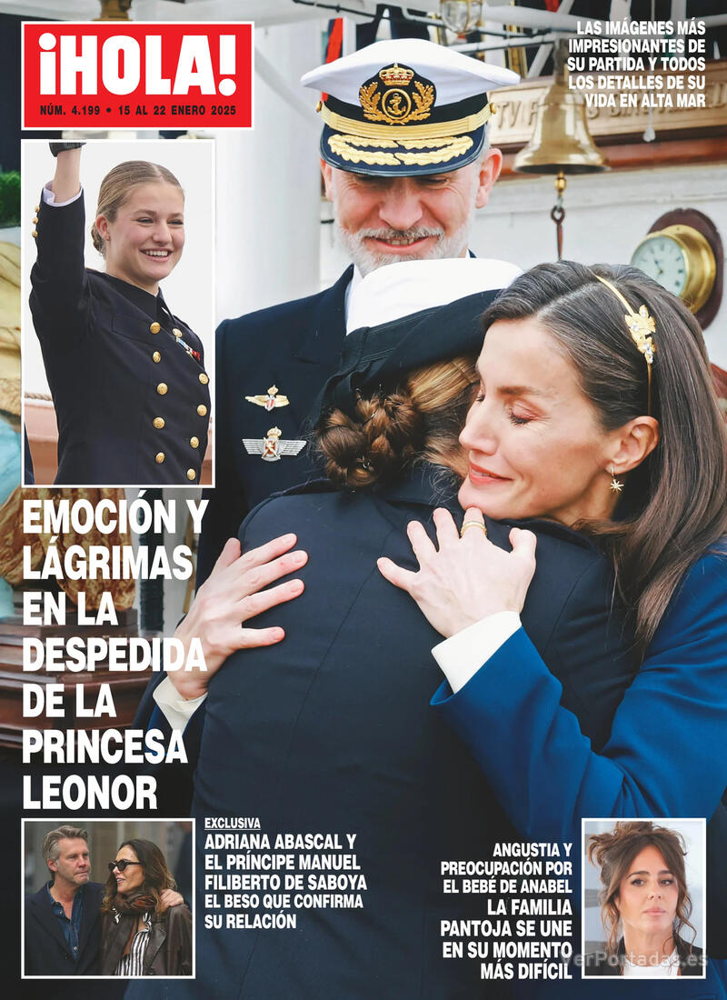

LALIGA El leganés corta la recha (1-0) de 15 victorias del Atlético de Madrid, el Barca empata (1-1) frente al Getafe y el Madrid puede poner líder Páginas 40 y 41
EL MUNDO Y LA REVISTA ¡HOLA!, JUNTOS POR 4,20€
